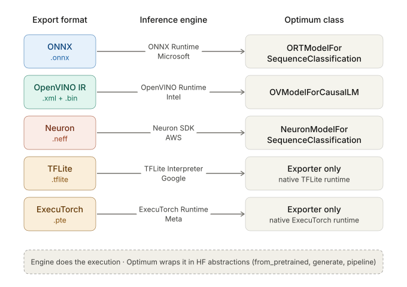

In Hugging Face, the libraries like transformers or diffusers are designed to be more general-purpose; they enable us to load, train, and run the models of different neural architectures. The main limitation is that they are not natively optimized for specific hardware environments like Intel CPUs, Nvidia GPUs or AWS Inferentia chips.
Optimum, as an extension of those general-purpose libraries, takes those standard models and applies hardware-specific optimizations.
1. Unified Model Export & Serialization
Optimum exports standard framework models into production-ready formats: ONNX, TFLite, OpenVINO, Neuron, and ExecuTorch.
- Export formats are fundamentally designed and structured for inference-only execution.
- When we export the models, we actually decouple them from heavy training frameworks. This allows for lightweight production deployment.
- The export operation unlocks hardware-specific optimizations, leading to faster inference.
- Exported static graphs are structurally stable and easier to quantize.
2. Quantization and Model Pruning
Optimum provides post-training optimization tools to decrease compute and memory footprints.
- Quantization: We convert the weights and activations from standard 32-bit floating-point (FP32) to lower precision representations like FP16, INT8, or INT4. This reduces memory usage of the model both statically (on disk/VRAM) and dynamically (at runtime), while speeding up the inference.
- Pruning: It aims to remove structurally or element-wise less important connections or weights from the neural network graph to introduce sparsity and drop unneeded operations. In connection pruning an entire neuron, filter or channel is removed. Weight pruning, on the other hand, zeroes out individual small weights, but the connection still exists in the graph.
3. Hardware-Specific Inference Engines
Exporting a model changes its format for hardware-specific optimization, but a dedicated inference engine is required to execute and realize these optimizations on physical chips. Optimum provides wrapper classes and integrations at the top of existing third party inference engines.

4. Key Architectural Distinction
ONNX Runtime is Microsoft's low-level inference engine for executing ONNX models. At this level, developers typically interact directly with the runtime by loading an ONNX graph into an InferenceSession, preparing input tensors, managing data conversions, and handling model-specific preprocessing and postprocessing logic.
optimum.onnxruntime is Hugging Face's high-level integration layer built on top of ONNX Runtime. Rather than interacting with the runtime directly, users work with familiar Hugging Face abstractions such as ORTModelForSequenceClassification, ORTModelForCausalLM, from_pretrained(), generate(), and pipeline().
The underlying execution engine remains ONNX Runtime, and therefore the performance characteristics are largely the same. The primary value of Optimum lies in ecosystem integration. Optimum's role is to bridge the Hugging Face ecosystem with that runtime. It automatically integrates model configurations, tokenizers, feature extractors, processors, generation utilities, model export workflows, and inference pipelines into a unified interface. If your starting point is a Hugging Face model and your goal is deployment or inference optimization, Optimum is usually the most convenient path.